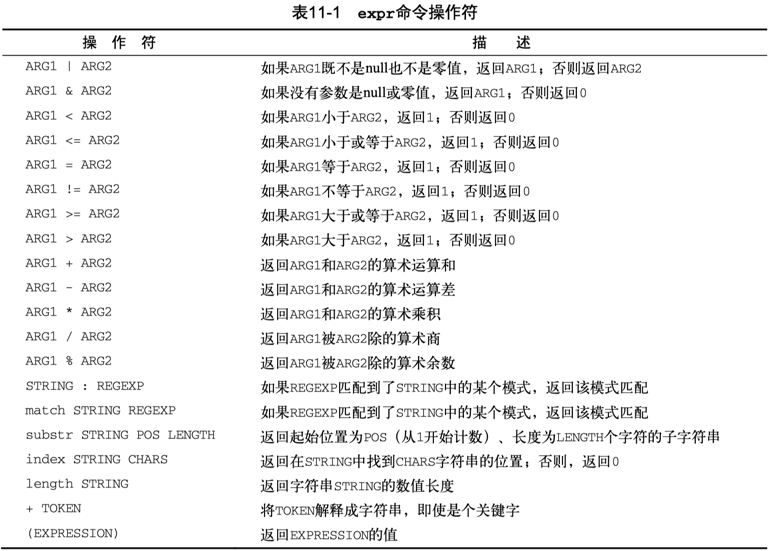

Linux Shell Program - expr
Linux 下的 Shell 编程之表达式。
Difference between let, expr and $[]
命令行执行运算表达式：
$ expr 5 + 1
6
$ $(expr 5 + 1)
zsh: command not found: 6
$ $[5 + 1]
zsh: command not found: 6
$ $((5+1))
zsh: command not found: 6
如果想在命令行执行数学计算，建议使用数学计算器
bc（bash calculator）。
在 bash shell 脚本中有以下几种运算表达式的书写方式。
expr#
最开始，Bourne shell 提供了一个特别的命令用来处理数学表达式。
expr 命令允许在命令行上处理数学表达式，但是特别笨拙。
expr 命令能够识别少数的数学和字符串操作符，见表11-1。

需要注意两点：
- 操作符两侧需要空格隔开算子；
- 算子引用变量需要用美元符号；
可用 expr 表达式实现 for 循环中记录递增的索引：
综合示例2：
#!/bin/bash
$ var1=5
$ var2=1
$ x=$var1+$var2
$ echo "x=$x"
x=5+1
$ y=$(expr $var1+$var2)
$ echo "y=$y"
y=5+1
$ z=$(expr $var1 + $var2)
$ echo "z=$z"
z=6
前两种运算符与算子之间没有空格，被当成了字符串拼接。
第三种是正确的 expr 算术表达式写法，结果符合预期。
let#
let command performs arithmetic evaluation and is a shell built-in.
bash shell 内置支持的 let 表达式，直接引用变量，而无需美元符号解引用，更接近于 C 等现代编程语言里面的自然表达式。
范式：let var3=var1+var2
$ z=0
$ let z=z+3 # 等效: let z+=3
$ let "z += 3"
$ echo "z = $z"
6
$ let 'sum=10+1'
$ echo "sum = $sum"
sum = 11
综合示例：
let 表达式更自然，算子引用的变量直接采用变量名，无需添加美元符号，推荐使用。
以下用 let 表达式实现 for 循环中记录递增的索引：
$ i=0
$ let index=i+1
$ echo $i $index
0 1
$ let i++
$ echo $i
1
$ let i+=1
$ echo $i
2
$ let index=i++
$ echo $i $index
3 2
$ let index=++i
$ echo $i $index
4 4
$[]#
bash shell 为了保持跟 Bourne shell 的兼容而包含了 expr 命令，但同时提供了一种更简单的方法来执行数学表达式。
在 bash 中，在将一个数学运算结果赋给某个变量时，可以用美元符号和方括号（$[operation]）将数学表达式围起来。
用方括号执行shell数学运算比用expr命令方便很多。
- 操作符两侧非必须要用空格隔开算子；
- 算子可直接引用变量，可无需美元符号；
常量计算表达式：
用 $[] 表达式实现 for 循环中记录递增的索引：
变量计算表达式：
在使用方括号来计算公式时，不用担心shell会误解乘号或其他符号。
对于方括号中的星号，shell知道它执行数学中的乘法运算而不是通配符，因为它在方括号内。
$ var1=100
$ var2=50
$ var3=45
$ # var4=$[$var1 * ($var2 - $var3)]
$ var4=$[var1*(var2-var3)] # 简写
$ echo The final result is $var4
The final result is 500
无论是 expr 表达式，还是中括号运算式，bash shell 数学运算符只支持整数运算。
$ var1=100
$ var2=45
$ var3=$(expr $var1 / $var2)
$ echo The final result is $var3
2
$ var4=$[var1/var2]
$ echo The final result is $var4
2
如果需要在shell脚本中进行浮点数运算，可以考虑看看 z shell，zsh 提供了完整的浮点数算术操作。
也可将表达式重定向到 bash 内置计算器 bc 做计算，参考 REDIRECTION 相关议题。
(())#
双括号命令 (( expression )) 支持更多的数学运算符。
双括号表达式有状态返回码，当运算结果非零时，返回0；否则，返回1。
相比test命令只能使用简单的算术操作，双括号命令允许在比较过程中使用高级数学表达式。
表12-4列出了双括号命令中会用到的其他运算符：

可以在脚本中使用双括号来执行数学运算，也可以使用if判断计算结果状态。
#!/bin/bash
n=0
(( n += 1 )) #Increment
echo $? # 返回0
(( n -= 1))
echo $? # 返回1
echo "n = $n"
val1=10
if (( $val1 ** 2 > 90 ))
then (( val2 = $val1 ** 2 ))
echo "The square of $val1 is $val2"
fi
关于双括号的场景，参考bash中C语言风格的for循环格式：
注意，有些部分并没有遵循bash shell标准的for命令：
- 变量赋值可以有空格
- 条件中的变量不以美元符开头
- 迭代过程的算式未用expr命令格式。
在 Linux Command - awk control 中的格式化输出（printf）
使用 awk 对 hexdump 第一列 offset 值添加地址偏移量（baddr）以便得到 address。
对于无前缀的十六进制格式化字符串 "%08_ax\t"，需先添加 0x 前缀，并使用(("0x"$1))对字符串进行数值化。
$ got_offset=$(objdump -hw a.out | awk '/.got/{print "0x"$6}')
$ got_size=$(objdump -hw a.out | awk '/.got/{print "0x"$3}')
$ hexdump -v -s $got_offset -n $got_size -e '"%08_ax\t" /8 "%016x\t" "\n"' a.out \
| awk 'BEGIN{print "Offset\t\tAddress\t\t\t\tValue"} \
{printf("%s\t", $1); printf("%016x\t", (("0x"$1))+65536); print $2}'
Offset Address Value
00000f90 0000000000010f90 0000000000000000
00000f98 0000000000010f98 0000000000000000
00000fa0 0000000000010fa0 0000000000000000
00000fa8 0000000000010fa8 00000000000005d0
00000fb0 0000000000010fb0 00000000000005d0
00000fb8 0000000000010fb8 00000000000005d0
00000fc0 0000000000010fc0 00000000000005d0
00000fc8 0000000000010fc8 00000000000005d0
00000fd0 0000000000010fd0 0000000000010da0
00000fd8 0000000000010fd8 0000000000000000
00000fe0 0000000000010fe0 0000000000000000
00000fe8 0000000000010fe8 0000000000000000
00000ff0 0000000000010ff0 0000000000000754
00000ff8 0000000000010ff8 0000000000000000
$(())#
在 dash shell、z shell 脚本中执行算术运算的正确格式是用双圆括号方法 —— $((expression))。
# man bash
Arithmetic Expansion
Arithmetic expansion allows the evaluation of an arithmetic expression and the substitu-
tion of the result. The format for arithmetic expansion is:
$((expression))
The expression is treated as if it were within double quotes, but a double quote inside
the parentheses is not treated specially. All tokens in the expression undergo parame-
ter expansion, string expansion, command substitution, and quote removal. Arithmetic
expansions may be nested.
The evaluation is performed according to the rules listed below under ARITHMETIC EVALUA-
TION. If expression is invalid, bash prints a message indicating failure and no substi-
tution occurs.
根据 Shell Check 建议，在做数学运算时，应采用 $(()) 代替 expr 和 let 表达式以及 $[ ]。
- SC2003:
expris antiquated. Consider rewriting this using$((..)),${}or[[ ]]. - SC2007: Use
$((..))instead of deprecated$[..]. - SC2219: Instead of
letexpr, prefer(( expr )).
注意：双括号中的表达式，解引用变量时可不添加美元符号。
Within double parentheses, parameter dereferencing is optional.
表达式 OPTIND=$(($OPTIND + 1)) 将被 ShellCheck 检测报错 C2004: $/${} is unnecessary on arithmetic variables. 应修改为 OPTIND=$((OPTIND + 1))。
示例：
双重括号表达式基本上和 let 表达式等效。
以下用 (( expr )) 表达式实现 for 循环中记录递增的索引：
减法计算间隔耗时：
$ time_start=1668913082
$ time_end=1668913195
$ time_cost=$(( $time_end - $time_start ))
$ echo $time_cost
113
乘法计算倍积：
双乘计算幂：
浮点数乘法，printf 可限定输出浮点位数：
整除取模运算：
取模和取余运算：
$ value1=10
$ value2=$(( $value1 / 3 ))
$ echo $value2
3
$ value3=$(( $value1 % 3 ))
$ echo $value3
1
将被除数浮点化，以便计算完整的浮点除法结果：
$ value1=10
$ value2=$(( $value1 / 3. ))
$ echo $value2
3.3333333333333335
$ printf "%.3f\n" $value2
3.333
实际案例：readelf -SW test-gdb 读取其中的 section .interp 的 Offset=0x000238, size=0x00001b。
$ readelf -SW test-gdb
Section Headers:
[Nr] Name Type Address Off Size ES Flg Lk Inf Al
[ 0] NULL 0000000000000000 000000 000000 00 0 0 0
[ 1] .interp PROGBITS 0000000000000238 000238 00001b 00 A 0 0 1
[11] .init PROGBITS 00000000000005b8 0005b8 000018 00 AX 0 0 4
[26] .strtab STRTAB 0000000000000000 001898 000237 00 0 0 1
[27] .shstrtab STRTAB 0000000000000000 001acf 0000fa 00 0 0 1
调用 od(octal dump) 和 hd(hex dump) 工具均可打印其内容：
$ od -j 0x000238 -N 0x00001b -S 3 test-gdb
0001070 /lib/ld-linux-aarch64.so.1
$ hd -s 0x000238 -n 0x00001b test-gdb
00000238 2f 6c 69 62 2f 6c 64 2d 6c 69 6e 75 78 2d 61 61 |/lib/ld-linux-aa|
00000248 72 63 68 36 34 2e 73 6f 2e 31 00 |rch64.so.1.|
00000253
假设我们不想要 od 和 hd 开头的偏移量，只想打印纯净的 bytearray 对应的字符串（strings），可以考虑使用 head+tail+strings：
$ head -c 0x000238+0x00001b test-gdb | tail -c 0x00001b | strings
head: invalid number of bytes: ‘0x000238+0x00001b’
tail: invalid number of bytes: ‘0x00001b’
报错显示 head/tail 的 -c 选项参数不支持十六进制，只支持十进制。
可以将十六进制表达式用 $(()) 包围起来解决该问题：
$ head -c $((0x000238+0x00001b)) test-gdb | tail -c $((0x00001b)) | strings
/lib/ld-linux-aarch64.so.1
另外，我们可以使用 objdump -j .init -d test-gdb 来反汇编指定的 section .init。
另一种方式是指定地址范围 [--start-address, --stop-address)，但这两个选项参数同样只认十进制。
$ objdump -d --start-address=0x5b8 --stop-address=0x5b8+0x18 test-gdb
objdump: --stop-address: bad number: 0x5b8+0x18
可以将计算结束地址的十六进制表达式用 $(()) 包围起来解决该问题：
$ objdump -d --start-address=0x5b8 --stop-address=$((0x5b8+0x18)) test-gdb
test-gdb: file format elf64-littleaarch64
Disassembly of section .init:
00000000000005b8 <_init>:
5b8: d503201f nop
5bc: a9bf7bfd stp x29, x30, [sp, #-16]!
5c0: 910003fd mov x29, sp
5c4: 9400002c bl 674 <call_weak_fn>
5c8: a8c17bfd ldp x29, x30, [sp], #16
5cc: d65f03c0 ret